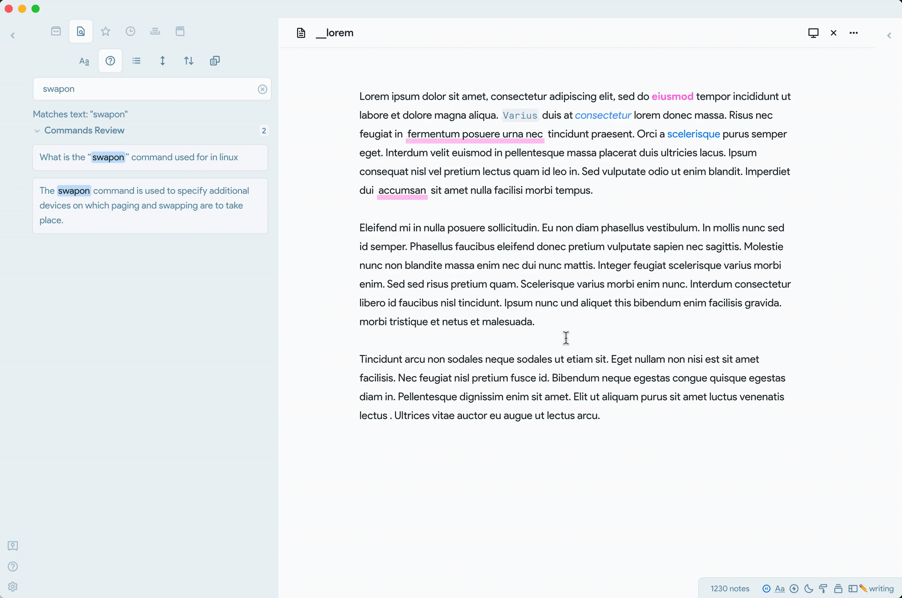
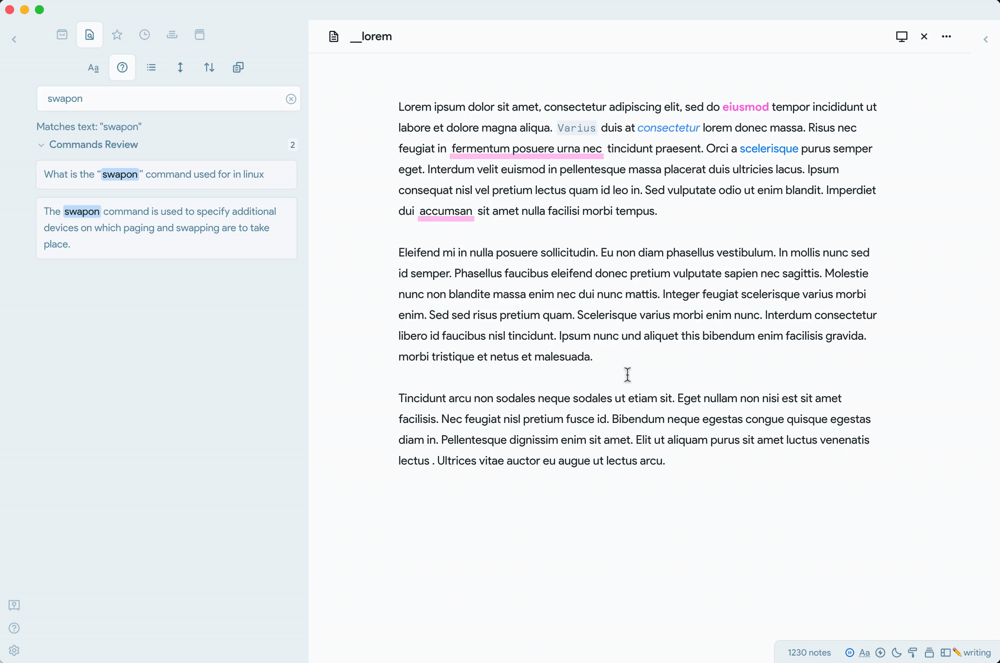

00: Preparation for Following
1 论文阅读指南
在深入学习人工智能相关论文之前，掌握高效且系统的阅读方法至关重要。论文阅读经典指南 How to Read a Paper 中提出了“三遍阅读法”，为我们提供了清晰的实践路径：
- 第一遍：快速浏览，获取论文的整体结构和核心结论。聚焦于标题（title）、摘要（abstract）、引言（introduction）与结论（conclusion），从宏观上了解文章的研究方向。
- 第二遍：细读论文，关注理论推导、实验设置与关键图表。重点理解论文所提出的方法、实验设计、结果分析及其支撑逻辑。
- 第三遍：批判性阅读，系统分析论文的优劣，提出建设性问题，反思该方法是否具有通用性或是否能应用于自身研究。
需要强调的是，阅读论文是一个循环迭代、逐步深入的过程。在反复阅读与思考中，我们会不断修正理解、加深认知。与此同时，通过与他人交流、参与讨论，有助于拓宽视角、深化思考。（本项目网站也因此而生，旨在为研究者们提供一个共同交流学习的平台）
为提升阅读效率，我们建议在精读阶段，使用颜色标记不同内容。例如在 Harvard CS197 AI Research Experiences 的 Lecture 3 中给出的策略：
- 黄色：突出论文所试图解决的核心问题或挑战。
- 绿色：标记论文中的提到的通用概念。
- 粉色：对应提出的算法方法或技术路径。
- 橙色：用于标记论文的创新点与贡献。
例如如下示意图：
这套方法并非唯一标准，关键在于构建一套适合自身认知方式的可视化标记体系。统一的标注风格，有助于在后期回顾或跨论文比较时高效定位关键信息。本项目所收录的每篇论文笔记也将采用这一结构化高亮标记方法。
2 工具准备
科学阅读离不开合适的工具支撑。以下是推荐的工具体系，涵盖文献管理、笔记整理、代码执行等多个维度。
2.1 文献管理：Zotero
随着论文积累的增多，系统的文献管理工具不可或缺。Zotero 是一款免费且开源的文献管理平台，支持自动导入、分组管理与多格式引用（如 BibTeX）。其可扩展性极强，支持插件与主题定制。
推荐插件：
- Better BibTex：增强 BibTeX 导出功能，便于与 LaTeX 无缝集成。
- Ethereal Style：为 Zotero 提供美观的 UI 风格，提升使用体验。
尽管 Zotero 存在一定学习曲线，但其长期价值远超初期投入。若仅希望临时阅读，PDF 阅读器亦可；但从科研视角出发，建议尽早投入学习与使用。
此外，Zotero Chrome Connector 插件可实现一键导入网页文献，极大提升文献收集效率：
如 Figure 3 所示，只需点击插件按钮，即可将当前网页内容导入至文献库。
2.2 笔记记录：Obsidian
Obsidian 是一款基于 Markdown 的笔记系统，支持双向链接与图谱视图，特别适合用于构建个人知识体系。
推荐插件：
- obsidian-latex-suite：提供 LaTeX 快捷输入与公式预览功能，显著提高数学表达效率。
- Highlightr Plugin：支持自定义高亮颜色，便于分类信息标注。
 

需要注意的是，过度美化界面或插件堆叠可能反而分散注意力。建议以“结构清晰、内容为本”为首要原则。
对于不使用 Obsidian 的用户，也可选择：
- Notion：如 Figure 5 (a) 所示，适合多人协作与可视化编辑。
- 飞书：如 Figure 5 (b) 所示，功能全面，适合企业级文档管理。
2.3 代码执行：Jupyter Notebook
在“Paper with Code”理念下，每篇论文将配套 Jupyter Notebook 实现核心算法。其交互式文档特性，使其成为学习与验证代码的理想平台。
若对 Jupyter Notebook 不熟悉，推荐参考 官方文档，以快速入门。
相应的代码，我会放在GitHub的仓库中
2.4 GPU 平台：云端执行环境
深度学习模型常需 GPU 加速，若本地无 GPU 可使用以下平台：
- Google Colab：Google 提供的免费云端 Notebook 平台，支持 GPU 与 TPU。
- Kaggle Kernels：支持 GPU 的数据科学平台，适合快速实验。
国内可选平台：
- AutoDL：适合国内用户，配置简单，支持定制化部署。
其他推荐：
- RunPod、Lambda Labs：提供稳定、低延迟的 GPU 训练环境，适合中大型实验任务。
通过合理配置上述工具，可以构建出一个系统化、高效的论文学习与研究流程。在接下来的章节中，每篇论文将附带代码实现、结构解析与批判性思考，欢迎共同学习交流。
3 总结
在本节中，我们介绍了高效阅读论文的方法论与工具体系。通过“三遍阅读法” Listing 1， 我们可以系统地理解论文内容，并在此基础上进行批判性思考。同时，借助 Zotero Section 2.1、ObsidianSection 2.2 等工具，可以有效管理文献、记录笔记与执行代码。 在后续章节中，我们将应用这些方法与工具，深入分析每篇论文的核心思想、实验设计与创新贡献。希望通过本项目的学习，能够帮助大家更好地掌握人工智能领域的前沿研究动态，并在实践中不断提升自己的科研能力。